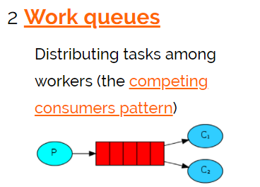
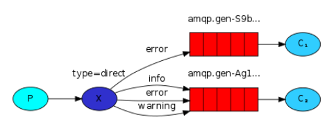

消息队列 GridFS
1 页面发布
1.1 需求分析
业务流程如下：
1、管理员进入管理界面点击“页面发布”，前端请求cms页面发布接口。
2、cms页面发布接口执行页面静态化，并将静态化页面(html文件)存储至GridFS中。
3、静态化成功后，向消息队列发送页面发布的消息。
页面发布的最终目标是将页面发布到服务器。
通过消息队列将页面发布的消息发送给各各服务器。
3、消息队列负责将消息发送给各各服务器上部署的Cms Client(Cms客户端)。
在服务器上部署Cms Client(Cms客户端)，客户端接收消息队列的通知。
4、每个接收到页面发布消息的Cms Client从GridFS获取Html页面文件，并将Html文件存储在本地服务器。
CmsClient根据页面发布消息的内容请求GridFS获取页面文件，存储在本地服务器。
1.2 RabbitMQ研究
要实现上边页面发布的功能，有一个重要的环节就是由消息队列将页面发布的消息通知给各各服务器。
本节的教学目标是对MQ的研究：
1、理解MQ的应用场景
2、理解MQ常用的工作模式
RabbitMQ 研究
1 RabbitMQ介绍
1.1 应用场景
MQ全称为Message Queue，即消息队列， RabbitMQ是由erlang语言开发，基于AMQP（Advanced Message Queue 高级消息队列协议）协议实现的消息队列，它是一种应用程序之间的通信方法，消息队列在分布式系统开发中应用非常广泛。RabbitMQ官方地址：http://www.rabbitmq.com/
开发中消息队列通常有如下应用场景：
1、任务异步处理。
将不需要同步处理的并且耗时长的操作由消息队列通知消息接收方进行异步处理。提高了应用程序的响应时间。
2、应用程序解耦合
MQ相当于一个中介，生产方通过MQ与消费方交互，它将应用程序进行解耦合。
市场上还有哪些消息队列？
ActiveMQ，RabbitMQ，ZeroMQ，Kafka，MetaMQ，RocketMQ、Redis。
为什么使用RabbitMQ呢？
1、使得简单，功能强大。
2、基于AMQP协议。
3、社区活跃，文档完善。
4、高并发性能好，这主要得益于Erlang语言。
5、Spring Boot默认已集成RabbitMQ
1.2 其它相关术语
AMQP是什么 ？

总结：AMQP是一套公开的消息队列协议，最早在2003年被提出，它旨在从协议层定义消息通信数据的标准格式，为的就是解决MQ市场上协议不统一的问题。RabbitMQ就是遵循AMQP标准协议开发的MQ服务。
JMS是什么 ？

总结：
JMS是java提供的一套消息服务API标准，其目的是为所有的java应用程序提供统一的消息通信的标准，类似java的jdbc，只要遵循jms标准的应用程序之间都可以进行消息通信。它和AMQP有什么 不同，jms是java语言专属的消息服务标准，它是在api层定义标准，并且只能用于java应用；而AMQP是在协议层定义的标准，是跨语言的 。
2 RabbitMQ工作原理
2.1 RabbitMQ工作原理
下图是RabbitMQ的基本结构：

组成部分说明如下：
- Broker：消息队列服务进程，此进程包括两个部分：Exchange和Queue。
- Exchange：消息队列交换机，按一定的规则将消息路由转发到某个队列，对消息进行过虑。
- Queue：消息队列，存储消息的队列，消息到达队列并转发给指定的消费方。
- Producer：消息生产者，即生产方客户端，生产方客户端将消息发送到MQ。
- Consumer：消息消费者，即消费方客户端，接收MQ转发的消息。
消息发布接收流程：
—–发送消息—–
1、生产者和Broker建立TCP连接。
2、生产者和Broker建立通道。
3、生产者通过通道消息发送给Broker，由Exchange将消息进行转发。
4、Exchange将消息转发到指定的Queue（队列）
—-接收消息—–
1、消费者和Broker建立TCP连接
2、消费者和Broker建立通道
3、消费者监听指定的Queue（队列）
4、当有消息到达Queue时Broker默认将消息推送给消费者。
5、消费者接收到消息。
2.2 RabbitMQ下载安装
2.2.1 下载安装
RabbitMQ由Erlang语言开发，Erlang语言用于并发及分布式系统的开发，在电信领域应用广泛，OTP（Open Telecom Platform）作为Erlang语言的一部分，包含了很多基于Erlang开发的中间件及工具库，安装RabbitMQ需要安装Erlang/OTP，并保持版本匹配，如下图：
RabbitMQ的下载地址：http://www.rabbitmq.com/download.html
本项目使用Erlang/OTP 20.3版本和RabbitMQ3.7.3版本。
1）下载erlang
地址如下：
http://erlang.org/download/otp_win64_20.3.exe
或去老师提供的软件包中找到 otp_win64_20.3.exe，以管理员方式运行此文件，安装。
erlang安装完成需要配置erlang环境变量： ERLANG_HOME=D:\Program Files\erl9.3 在path中添加%ERLANG_HOME%\bin;
2）安装RabbitMQ
https://github.com/rabbitmq/rabbitmq-server/releases/tag/v3.7.3
或去老师提供的软件包中找到 rabbitmq-server-3.7.3.exe，以管理员方式运行此文件，安装。
2.2.2启动
安装成功后会自动创建RabbitMQ服务并且启动。
1）从开始菜单启动RabbitMQ
完成在开始菜单找到RabbitMQ的菜单：

RabbitMQ Service-install :安装服务
RabbitMQ Service-remove 删除服务
RabbitMQ Service-start 启动
RabbitMQ Service-stop 启动
2）如果没有开始菜单则进入安装目录下sbin目录手动启动：

1）安装并运行服务
rabbitmq-service.bat install 安装服务 rabbitmq-service.bat stop 停止服务 rabbitmq-service.bat start 启动服务
2）安装管理插件
安装rabbitMQ的管理插件，方便在浏览器端管理RabbitMQ
管理员身份运行 rabbitmq-plugins.bat enable rabbitmq_management
3、启动成功 登录RabbitMQ
进入浏览器，输入：http://localhost:15672

初始账号和密码：guest/guest

2.2.3 注意事项
1、安装erlang和rabbitMQ以管理员身份运行。
2、当卸载重新安装时会出现RabbitMQ服务注册失败，此时需要进入注册表清理erlang
搜索RabbitMQ、ErlSrv，将对应的项全部删除。
2.2 快速入门
按照官方教程(http://www.rabbitmq.com/getstarted.html)测试hello world:

2.2.1搭建环境
1）java client
生产者和消费者都属于客户端，rabbitMQ的java客户端如下：

我们先用 rabbitMQ官方提供的java client测试，目的是对RabbitMQ的交互过程有个清晰的认识。
参考 ：https://github.com/rabbitmq/rabbitmq-java-client/
2）创建maven工程
创建生产者工程和消费者工程，分别加入RabbitMQ java client的依赖。
test-rabbitmq-producer：生产者工程
test-rabbitmq-consumer：消费者工程
1 | <dependency> |
2.2.2 生产者
生产者操作流程如下：
1）创建连接
2）创建通道
3）声明队列
4）发送消息
在生产者工程下的test包中创建测试类如下：
1 |
1 | public class Producer01 { |
2.2.3 消费者
消费者操作流程如下：
1）创建连接
2）创建通道
3）声明队列
4）监听队列
5）接收消息
6）ack回复
在消费者工程下的test包中创建测试类如下：
1 | public class Consumer01 { |
3 RabbitMQ工作模式
RabbitMQ有以下几种工作模式 ：
1、Work queues
2、Publish/Subscribe
3、Routing
4、Topics
5、Header
6、RPC
3.1 Work queues

work queues与入门程序相比，多了一个消费端，两个消费端共同消费同一个队列中的消息。
应用场景：对于 任务过重或任务较多情况使用工作队列可以提高任务处理的速度。
测试：
1、使用入门程序，启动多个消费者。
2、生产者发送多个消息。
结果：
1、一条消息只会被一个消费者接收；
2、rabbit采用轮询的方式将消息是平均发送给消费者的；
3、消费者在处理完某条消息后，才会收到下一条消息。
3.2 Publish/subscribe
3.2.1生产者
3.2.1.1 发布订阅模式介绍

发布订阅模式：
1、每个消费者监听自己的队列。
2、生产者将消息发给broker，由交换机将消息转发到绑定此交换机的每个队列，每个绑定交换机的队列都将接收到消息
3.2.1.2 生产者代码
通过一个案例讲解发布订阅模式：
用户通知，当用户充值成功或转账完成系统通知用户，通知方式有短信、邮件多种方法 。
生产者代码如下：
声明Exchange_fanout_inform交换机。
声明两个队列并且绑定到此交换机，绑定时不需要指定routingkey
发送消息时不需要指定routingkey
1 | package com.xuecheng.test.rabbitmq; |
3.2.2 消费者
3.2.2.1 消费者代码
邮件发送消费者代码如下：
1 | package com.xuecheng.test.rabbitmq; |
按照上边的代码，编写邮件通知的消费代码。
3、短信发送消费者
参考上边的邮件发送消费者代码编写。
3.2.2.2 测试
打开RabbitMQ的管理界面，观察交换机绑定情况：
使用生产者发送若干条消息，每条消息都转发到各各队列，每消费者都接收到了消息。
3.2.2.3 小结
1、publish/subscribe与work queues有什么区别。
区别：
1）work queues不用定义交换机，而publish/subscribe需要定义交换机。
2）publish/subscribe的生产方是面向交换机发送消息，work queues的生产方是面向队列发送消息(底层使用默认交换机)。
3）publish/subscribe需要设置队列和交换机的绑定，work queues不需要设置，实质上work queues会将队列绑定到默认的交换机 。
相同点：
所以两者实现的发布/订阅的效果是一样的，多个消费端监听同一个队列不会重复消费消息。
2、实质工作用什么 publish/subscribe还是work queues。
建议使用 publish/subscribe，发布订阅模式比工作队列模式更强大，并且发布订阅模式可以指定自己专用的交换机。
3.3 Routing路由模式
3.3.1 路由模式介绍

路由模式：
1、每个消费者监听自己的队列，并且设置routingkey。
2、生产者将消息发给交换机，由交换机根据routingkey来转发消息到指定的队列。
3.3.2 生产者
声明exchange_routing_inform交换机。
声明两个队列并且绑定到此交换机，绑定时需要指定routingkey
发送消息时需要指定routingkey
1 | package com.xuecheng.test.rabbitmq; |
3.3.3 消费者
邮件发送消费者代码：
1 | package com.xuecheng.test.rabbitmq; |
3、短信发送消费者
参考邮件发送消费者的代码流程，编写短信通知的代码。
3.3.4 测试
打开RabbitMQ的管理界面，观察交换机绑定情况：
使用生产者发送若干条消息，交换机根据routingkey转发消息到指定的队列。
3.4.5 小结
1、Routing模式和Publish/subscibe有啥区别？
Routing模式要求队列在绑定交换机时要指定routingkey，消息会转发到符合routingkey的队列。
3.4 Topics
3.4.1统配符模式介绍

路由模式：
1、每个消费者监听自己的队列，并且设置带统配符的routingkey。
2、生产者将消息发给broker，由交换机根据routingkey来转发消息到指定的队列。
3.4.2生产者
案例：
根据用户的通知设置去通知用户，设置接收Email的用户只接收Email，设置接收sms的用户只接收sms，设置两种通知类型都接收的则两种通知都有效。
生产者代码如下：
声明交换机，指定topic类型：
1 | /** |
完整代码：
1 | package com.xuecheng.test.rabbitmq; |
3.4.3 消费端
队列绑定交换机指定通配符：
统配符规则：
中间以“.”分隔。
符号#可以匹配多个词，符号*可以匹配一个词语。
1 | //声明队列 |
3.4.4 测试
使用生产者发送若干条消息，交换机根据routingkey统配符匹配并转发消息到指定的队列。
3.4.5 小结
1、本案例的需求使用Routing工作模式能否实现？
使用Routing模式也可以实现本案例，共设置三个 routingkey，分别是email、sms、all，email队列绑定email和all，sms队列绑定sms和all，这样就可以实现上边案例的功能，实现过程比topics复杂。
Topic模式更多加强大，它可以实现Routing、publish/subscirbe模式的功能。
3.5 其它模式
3.5.1 Header模式
header模式与routing不同的地方在于，header模式取消routingkey，使用header中的 key/value（键值对）匹配队列。
案例：
根据用户的通知设置去通知用户，设置接收Email的用户只接收Email，设置接收sms的用户只接收sms，设置两种通知类型都接收的则两种通知都有效。
代码：
1）生产者
队列与交换机绑定的代码与之前不同，如下：
1 | Map<String, Object> headers_email = new Hashtable<String, Object>(); |
通知：
1 | String message = "email inform to user"+i; |
2）发送邮件消费者
1 | channel.exchangeDeclare(EXCHANGE_HEADERS_INFORM, BuiltinExchangeType.HEADERS); |
3)测试
3.5.2 RPC
RPC即客户端远程调用服务端的方法 ，使用MQ可以实现RPC的异步调用，基于Direct交换机实现，流程如下：
1、客户端即是生产者就是消费者，向RPC请求队列发送RPC调用消息，同时监听RPC响应队列。
2、服务端监听RPC请求队列的消息，收到消息后执行服务端的方法，得到方法返回的结果
3、服务端将RPC方法 的结果发送到RPC响应队列
4、客户端（RPC调用方）监听RPC响应队列，接收到RPC调用结果。
4 Spring整合RibbitMQ
4.1 搭建环境
4.1.1 添加依赖
我们选择基于Spring-Rabbit去操作RabbitMQ
https://github.com/spring-projects/spring-amqp
使用spring-boot-starter-amqp会自动添加spring-rabbit依赖，如下：
1 | <dependency> |
4.1.2 配置application.yml
配置连接rabbitmq的参数
1 | server: |
4.1.3 配置交换机和队列
定义RabbitConfig类，配置Exchange、Queue、及绑定交换机。
本例配置Topic交换机。
1 | package com.xuecheng.test.rabbitmq.config; |
4.3 生产者
使用RarbbitTemplate发送消息
1 | package com.xuecheng.test.rabbitmq; |
4.4消费者
4.4.1 消费者代码
创建消费端工程，添加依赖：
1 | <dependency> |
使用@RabbitListener注解监听队列。
1 | package com.xuecheng.test.rabbitmq.mq; |